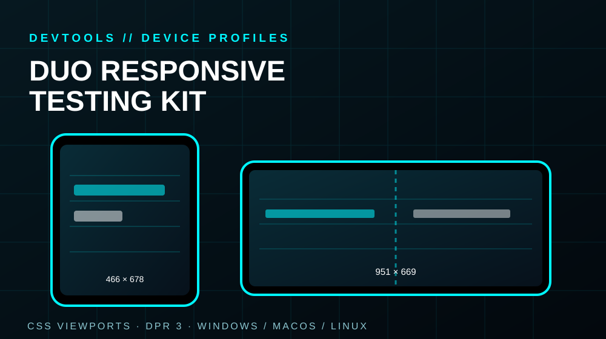

DUO CHROME DEVTOOLS PROFILES
Responsive device profiles for testing Duo-style outer and inner screen layouts in Chrome DevTools. Includes setup options for Windows, macOS and Linux, plus manual configuration and troubleshooting.
OUTER 466 × 678 CSS pxINNER 951 × 669 CSS pxDPR 3
VIEW FREE PROJECT ON GITHUB ↗Community-made viewport presets for responsive testing; not an official Apple product or a substitute for testing on real hardware.